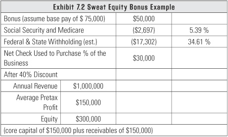

Each has a price; choose wisely and know the reasons for your choice.
There’s tremendous confusion about the word capital. Simply stated, it’s the difference between what you own (your assets) and what you owe (your liabilities). Another term for capital is equity. The capital in your business is used to purchase assets, such as inventory and equipment, and allows you to have the proper amount of cash on hand to meet your core capital target, which we discussed in chapter 4.
You can invest in a company by buying its stock, and you should expect a return on your investment. You should expect to get dividends with a nice rate of return, or you expect that the business will be sold and your investment will be worth much more than it was when you purchased the stock. When other people invest in your business, they expect the same returns on their investments.
The media interviews business owners who say things like, “I just need access to capital. I don’t understand why the banks won’t lend to me.” Here’s where the confusion arises: debt is not capital! Sometimes you’ll hear the term borrowed capital, but that’s an extreme distortion because capital isn’t the same as debt. Those are two different things. It’s either debt or capital.
When you have debt, the lenders love their money more than they love your business. It’s just a plain and simple fact. They’re in it for the return on their money. Remember that a loan must be repaid, and the terms are very inflexible. Banks have the worst timing when it comes to repaying loans. They want to collect when they think you are at risk, which is when you have the least ability to repay. At the moment they’re probably being more lenient than they should be, which could be detrimental to their own businesses. There are so many troubled businesses that banks are unwilling to create a cascade of losses by closing everyone down.
Certainly, there are times when you can use term debt (a fixed-payment note that is repaid over an agreed period of time) as a bridge to give you time to build capital through retaining profits in the business. If you build a bridge by getting a term note because you don’t have enough capital in your business, you have to make sure you make enough profit to get you over that bridge and to the other side of the river before the bridge collapses. In most cases, bankers are not going to be forgiving if you don’t make it to the other side of the river. It’s not that they’re evil; it’s what their business is built to do.
There is a lot of flexibility with the way financial problems are working out at the moment, but there is also a lot of trepidation among entrepreneurs who are unsure of the future. Some people are fully drawn on lines of credit, and they can’t make a payment. I have clients who are struggling, and they don’t know if their bank is going to allow them to convert their line of credit into a term note and start making payments to pay down the principal or if the bank is going to pull the loan and foreclose.
You should keep all this in mind when you decide how you’ll obtain capital. You have three choices: your own money, other people’s money, and sweat equity. Each one has its price. Choose wisely and know the reasons for your choice.
Early in my career, a client of mine wanted to start a business with no debt, so we sat down and calculated exactly what his capital requirements would be. When he left, he realized that he was $40,000 short of what was required. He said, “Thanks. I’m not going to start it yet, but I know how I’ll get $40,000.” He owned a piece of land, and he sold it for $40,000 to get his capital. He started his business with no debt and never borrowed a dime. He didn’t borrow against his land; he did the sure thing so he wouldn’t have debt hanging over his head. Instead of looking to the banks, your mom, or the SBA, look at your own resources and see if you can avoid debt.
It seems like a novel concept to use your own money to start your own business, but it’s possible and it has been done. If you start a business with your own money, you’re going to defend it to the greatest degree. It’s unlike anything else because you’re the most frugal when it is your own money. You had to work hard to get it, so you’re going to be careful with it. I’ve seen people inherit money and totally blow it. That money wasn’t earned, and that’s the difference. When people invest money they earned, it’s very precious and they’re careful with it.
When you capitalize your business with your own money, you want a good return on your investment. You can calculate it by dividing your pretax profit by your equity. As you know, my philosophy is that your business should make somewhere between 10 and 15 percent pretax profit. That rate of profitability coupled with maintaining a core capital target of two months of operating expenses with nothing drawn on a line of credit works out to about a 40 to 50 percent rate of return on the investment that you have in the business. When you get beyond 15 percent profitability, the return goes up to about 60 to 70 percent.
Remember Company B from our black hole example in chapter 3? Exhibit 7.1 shows their return on investment. You can see that over time their capital grew, and so did their distributions. The return-on-investment percentage is higher in the first two years because the company still had some debt to fund their receivables, but it normalized in the last three years when there was no debt in the company. This is where you can be fooled by percentages. Your return-on-investment percentage can be higher if you use debt, but you are adding risk to the business that prevents it from surviving hard times. Yes, it flies higher, but it also hits the ground harder when it falls.
Unfortunately, a lot of people who have the passion for business are stuck working for somebody else, and they don’t make enough money to save it for their own business venture. So what do you do if you don’t have the money? Tap into your network.
Remember the graph in exhibit 3.10 that showed the pretax profit line going straight up and the breakeven point in twenty-one months? These kinds of cases can’t be totally funded with debt. You have to find some partners who are going to be patient, long-term investors, or you have to be patient and grow only at the rate of your profitability increase. Take your pick, because those are your only two choices. As a general rule, I recommend other people’s money (OPM) as the funding source of last resort. If you don’t have enough money to do it right, then wait until you do.
With OPM, you’re not as careful because it’s not your money. Until you burn through all that money, you don’t make the hard choices that you should have made back when you first got the money. I can count on one hand how many of my clients have taken OPM and diligently protected that cash as a precious resource. Interestingly enough, every one of those clients came from very meager beginnings. They knew what it was like to experience scarcity, and they never wanted to go back there again.
When you use OPM, you have to be clear about the investors’ expectations and let them know you’re not giving them a salary. They get a salary only if they do a particular job within the business operation.
The more sophisticated the investor, the more reasonable the expectations and the tougher the terms of the deal. Investors with experience have lost enough times to know which questions to ask and which provisions to place in the agreement to protect their investment. It’s certainly dangerous to have investors with high expectations. They think they’re going to give you $20,000 and it’s going to turn into $20 million. This scenario has happened before, but it’s highly unlikely. It’s just as bad for somebody to give you $50,000 and have zero expectations. I’ve seen this situation over and over again. Usually it happens because the business goals weren’t clearly stated. The business drifts along and then a lot of time passes and no one is really paying attention. It’s almost like the investors have forgotten about you.
In setting expectations, you have to play out three scenarios. The scenario we all enjoy is when everything goes great and you can either sell the business to the highest bidder or keep operating the business and harvest the cash flow. The next scenario is quite common. The business gets stuck at some point without having reached its goals, so it needs more investment money to push through. In the last scenario, the business is just surviving and the owner is happy to live off it with no possible return for the investors. Unfortunately, the last scenario is the most common, and it’s the death of the business. You tried, failed, and it is time to close the doors. If there are any assets of value left during the shutdown, you have to decide who gets preference when it comes to returning investment money. Does it go to the owners or the investors?
You can get OPM from three sources: friends, family, and fools; angel investors; or venture capitalists.
Friends, family, and fools are the most common sources of OPM because when you calculate the amount of capital that’s needed to start a business, it’s usually less than $100,000—in many cases, it’s less than $50,000. This isn’t a lot of money in terms of building a business, so this amount is usually within reach of friends, family, and fools.
You have to keep in mind that with this approach, your investors will have either unrealistically high expectations or no expectations at all. You can have really bad consequences if the deal goes bad. You lose friends. You become estranged from family members. And fools have a tendency to be quite litigious (so do some family members!). There are endless lawsuits because no one set clear expectations, and everyone ends up with their noses out of joint. This is why legal agreements should be drafted by an experienced attorney (not cousin Vinnie who just got out of law school). Legal documents will not keep you from having a dispute, but they will make a difference in the speed of the settlement.
Angel investors are a great source for capital. They are accredited by the Securities and Exchange Commission as having $1 million of net worth, excluding their personal residence. Angel investors are individuals, not venture capital firms. They typically have active businesses and do angel investing only as a side activity. It’s a lot more structured now than it was twenty to thirty years ago.
Most angels invest between $20,000 and $1 million, but the sweet spot is $50,000 to $100,000. As I said before, the majority of my clients build businesses on $100,000 or less. You can find local angels by connecting with the local business community through the chamber of commerce and networking at local entrepreneurial events. Angels are usually easy to find because many of them like to tell stories of their good deals. Occasionally, they will also tell stories of the ones that did not work.
I strongly urge you to research the track record of angels to see how they handle the ups and downs. They have probably been part of some bad deals, and how they handled those situations is a predictor of how they’ll react when things go sour. You also want to set expectations with angel investors. They probably have a little longer fuse, but eventually they’ll put some pressure on you. On the other hand, some angels have let deals go on for many, many years, so it’s hard to predict.
More times than not, angels will push you to sign agreements. Unfortunately, some angels get a little sloppy because they don’t like to pay legal fees, so they start doing unprofessional documentation of their expectations and agreements. If you don’t have enough money to hire professional legal assistance, then you don’t have enough money to do the deal. It’s as simple as that.
Venture capitalists (VCs) are similar to angels except investing is their primary business activity. If you want to build a business to sell, obtaining venture capital is the fastest way. Since it is their business, VCs want to make enough money to compensate for their time and the money they invest, so they tend to move upstream. That is, they target businesses valued at $10 million or more. In weak markets they will move downstream a little bit or take a chance on an early-stage company that has really high potential. In most cases, the source of the VC’s money is either personal accumulated wealth or someone else’s money.
VCs probably deserve both the good and bad things that have been written about them. You have to go into a relationship with a VC with your eyes wide open and understand their expectations. They are professional investors and demand a return on their money. They want revenue, demonstrable profitability, and growth. When VCs invest on behalf of other people, they don’t want to get beaten up by their clients. If you don’t deliver, they may either run you out of your own business or sell your business. There’s no in-between. If your business value doesn’t go up, they’ll get out.
Sweat equity is probably the most common source of capital, and it’s my favorite. There’s something so American and entrepreneurial about rubbing two dollar bills together to make a profit. Even if I had money of my own to put into a business, I would preserve my cash and use sweat equity before I’d use my own cash or someone else’s.
Sweat equity is the least understood and least measured form of capital. I’ve made a practice of bringing it to the forefront to help people understand why it exists. It’s all about your effort and hard work. If you can’t afford to pay yourself a market-based wage for your efforts, then you’re going to have to defer payment and work for it. Structure your life so you can live on little or no salary until you can afford to pay yourself a better wage, and remember that even if you can pay yourself only a $20,000 salary, that doesn’t mean that’s all you’re worth.
As we discussed in chapter 1, the trap that most people fall into is believing that because they have a low wage, they can live off the profits of the business. It’s better to live off your savings and let your sweat equity build capital in your business. Then pay yourself a market-based wage when your business reaches 2 or 3 percent pretax profit.
Suppose you started your business for $100,000 and your market-based wage should be $75,000 per year. You can create equity by working for no wages in year one, pay yourself $50,000 in year two, and be at a full wage in year three. That just created $100,000 of capital! You can supplement your salary with your savings during the first two years. I find that pulling money from savings to live on creates the most focus for entrepreneurs.
In chapter 1 I talked about a scenario when there are two owners in a business and only one can go without wages and give sweat equity. There has to be some type of agreement to settle up the differences. Actually, this forces you into a good situation because you have to recognize the value of the business so you can set up an exchange of some kind to make up for the difference in contribution from the two owners.
My preference, in this situation, is that stock changes hands at least every year. Let’s say John and Mary started a business, and they are equal shareholders. John can’t live without a salary of $100,000 a year, but Mary, who is just as valuable as he is, needs to make only $50,000 a year. If John keeps booking $50,000 a year for four years, then John owes Mary $200,000. To their dismay—especially Mary’s—the business doesn’t look like it’s going to be able to repay the $200,000. John let four years of life go by before making the hard decisions that should have been made four years earlier. Not only that, but Mary made a bad investment by taking sweat equity.
If you settle up on the stock differential, it creates focus and draws attention to the business. Mary, who was making $50,000 but was worth $100,000, should have owned a greater percentage of the company instead of only 50 percent, and John would have seen some changes in her behavior. It’s as simple as that. If Mary had received additional stock each year as she went without full pay, I guarantee you the hard decisions about business performance would have been made sooner.
The most common sweat equity arrangement is when someone wants to earn their way into a business. Let’s say Patrick is one of your key employees and you want him to be an owner of the business. You have an incentive program whereby he can make up to $50,000 in extra income per year. At the end of the year, Patrick made the bonus, but unfortunately the IRS has to get their Social Security, Medicare, and payroll taxes. It’s too bad, but Patrick won’t net $50,000. He’ll get $50,000 gross minus 40 percent in taxes, which leaves him with $30,000.
Let’s say you put that $30,000 on the table in front of Patrick, and you tell him that, before he picks up the money, you have a better deal for him. You say, “You know the business is worth $750,000. And IRS rules allow me to use a discount for lack of marketability because we are a closely held business. And since you have less than a controlling interest in the business, I can discount it.” That discount averages somewhere between 40 and 45 percent. So if you have 750,000 shares and it’s worth $750,000, you can offer Patrick a dollar a share. But you can give him an opportunity to buy at $0.60 a share since you are allowed to discount it under the IRS rules.
Patrick knows you have a really good business because you practice OBM and he’s seen the numbers. You bring in $1 million of revenue per year and, as a top-performing business, you make a 15 percent pretax profit of $150,000. You’ve met your core capital target (two months of operating expenses in cash with nothing drawn on a line of credit), so you don’t have any debt. Patrick can see the percentage of stock that he could own and that he could get a distribution of profits. Exhibit 7.2 shows how the math works out.

Patrick purchases stock using his $30,000 net bonus. He can’t use the gross amount of $50,000 because taxes have to be paid. With the discount, Patrick uses his $30,000 to buy shares at $0.60 a share, which gives him 50,000 shares ($30,000 divided by $0.60 = 50,000 shares). With 800,000 total shares, his 50,000 shares give him 6.25 percent ownership of the business. With $150,000 of pretax profit, his 6.25 percent ownership gives him a profit allocation of $9,375 (150,000 x 0.0625). That $9,375 is taxable, so he’s going to owe 40 percent, or $3,750, in taxes. If I make a $30,000 investment and make interest income off of it, the interest income I make is taxable. So, it’s an equivalent factor. I owe the bonus to Patrick one way or the other. Patrick can choose to use his after-tax earnings to buy stock in the business to get future returns that will potentially be greater than the net pay he could get by taking the bonus.
To make this a real investment, it must not affect Patrick’s salary. He has paid a fair amount for his shares, and he is due a fair return (notice his ROI is still less than yours!). You started the business and get an ROI closer to 50 percent. This is because you bought it when it wasn’t worth $1 million; it was worth $200,000 to $300,000. This shows how, as a business grows over time, the rate of return on the money you leave in the business will continue to grow as well.
Patrick gets an ROI of 31 percent (9,375 ÷ 30,000) in a business that he knows. Not only that, he becomes a member of the team and gets to be involved in decision-making processes. What he has to decide, though, is if he wants to be a shareholder or not. Does he believe that he’ll continue to receive a 31 percent rate of return on his money? He must decide if this is a good way to invest his $30,000 or if he’d rather have the cash. If he picks the money up off the table, you know Patrick just wants the income. If he doesn’t pick it up, he not only wants to buy into the economic engine, but he also wants to be part of the ownership structure and build a more valuable future.
Granted, there are people who want to be owners for reasons that don’t involve economic decisions, but I encourage my clients not to have those people as owners because it messes up the value of what the shares really mean. Employees who become shareholders should be motivated first and foremost by the desire to get a return on their investment.
Chapter 7 Keys